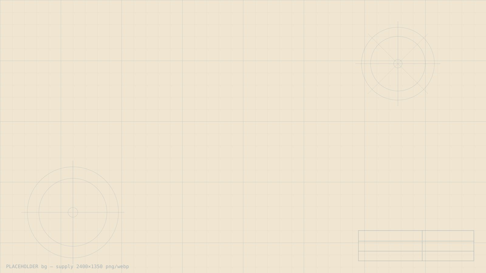
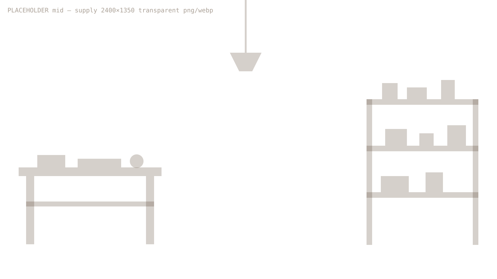
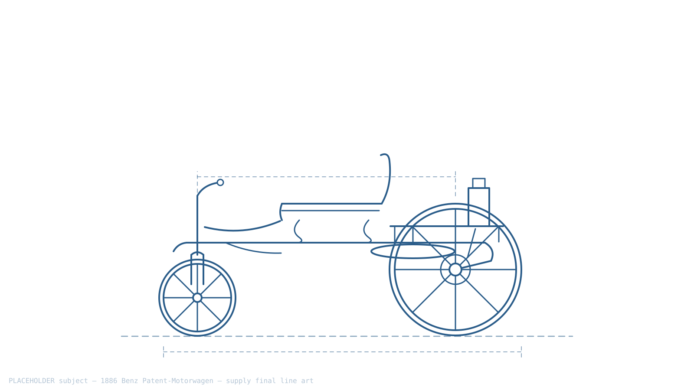
BENZ PATENT-MOTORWAGEN · 1886
THE FIRST IGNITION
Chapter 01 · College Beginnings
2017
Every machine has a first spark. Mine lit at Silicon Institute of Technology, Bhubaneswar — a B.Tech in Computer Science and the first lines of code, drafted like Benz drafting the Patent-Motorwagen.
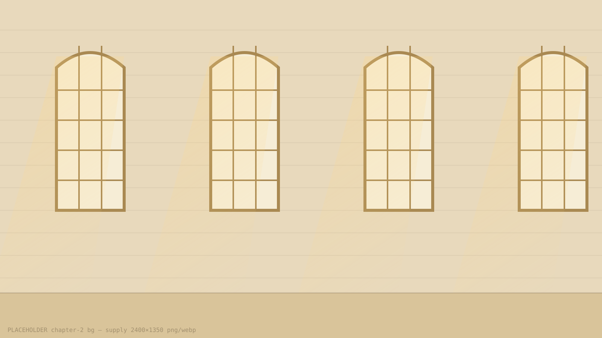
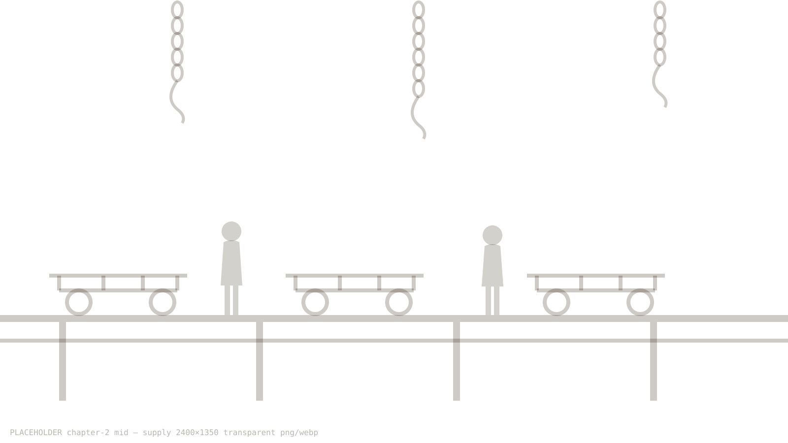
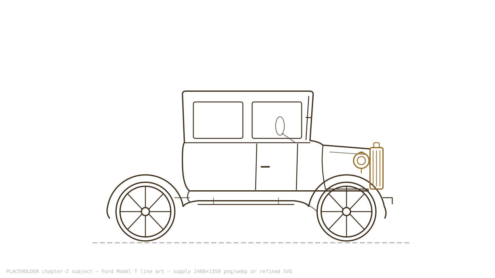
FORD MODEL T · 1908
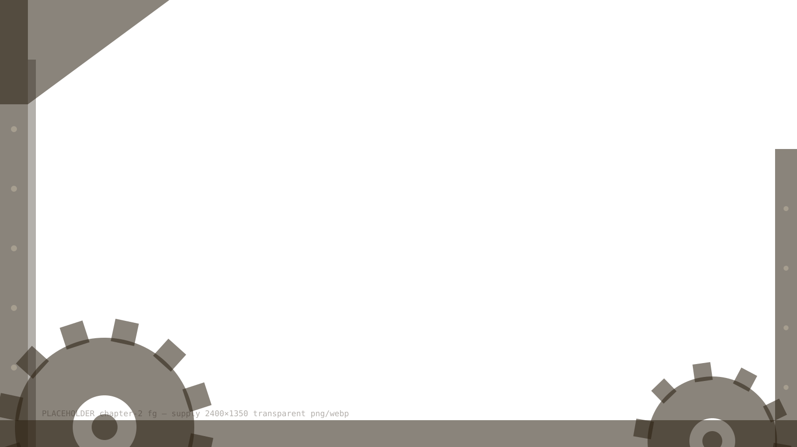
THE ASSEMBLY LINE
Chapter 02 · Learning the Craft
2018
Fundamentals, frameworks, and late-night builds — shipping code the way Ford shipped cars: one reliable piece at a time. In 2018 the first trophy arrived — the Smart Odisha Hackathon, won with an IoT smart drainage system built for the Govt. of Odisha.
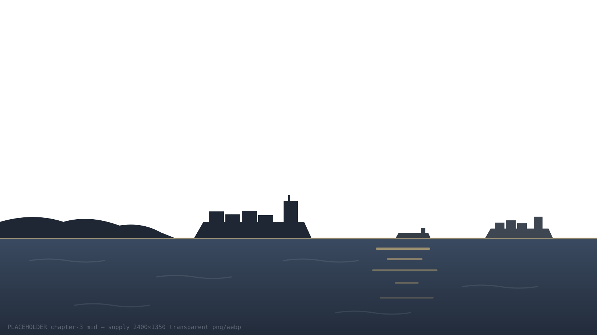
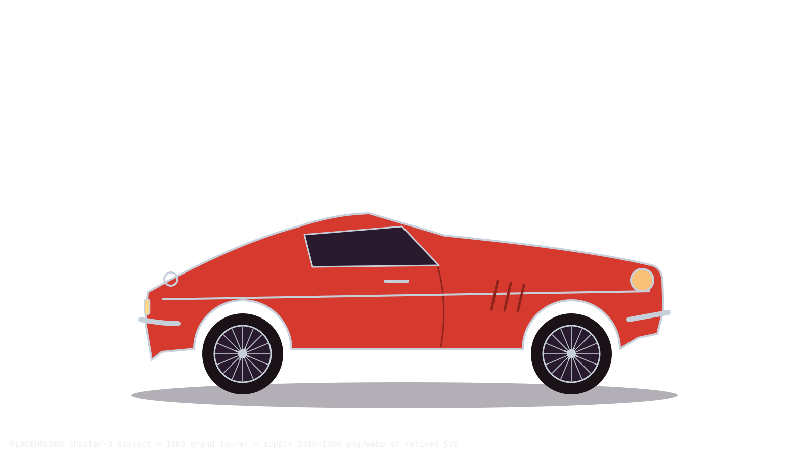
GRAND TOURER · 1965
THE OPEN ROAD
Chapter 03 · First Professional Years
2021
Joining Cozentus Technologies as a Full Stack & Cloud Platform Engineer — delivering an AI-powered vessel tracking system with predictive ETAs for 15,000+ ships, on AWS infrastructure engineered for 99% uptime and CI/CD pipelines serving 10+ applications.
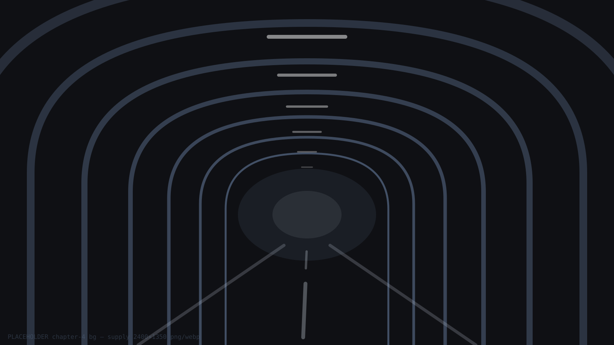
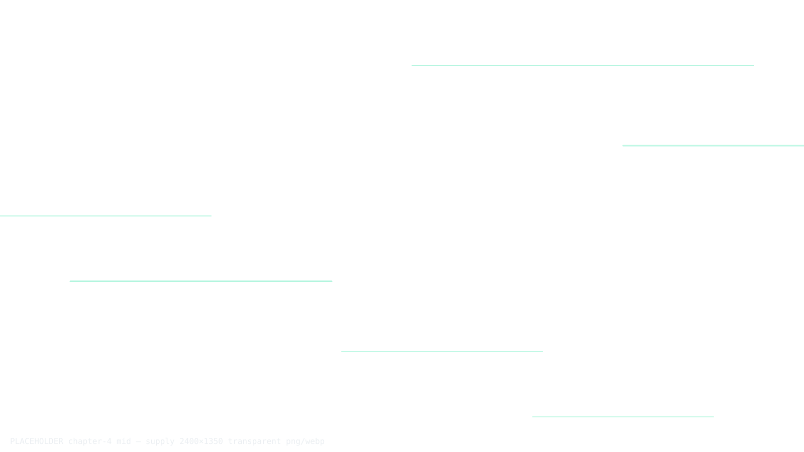
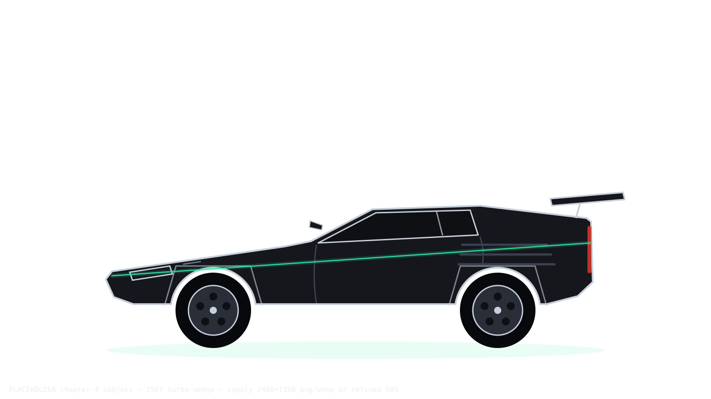
TURBO ERA · 1987
RAG + AGENTIC AI
AWS BEDROCK
MCP · n8n · TERRAFORM −80% PROVISIONING
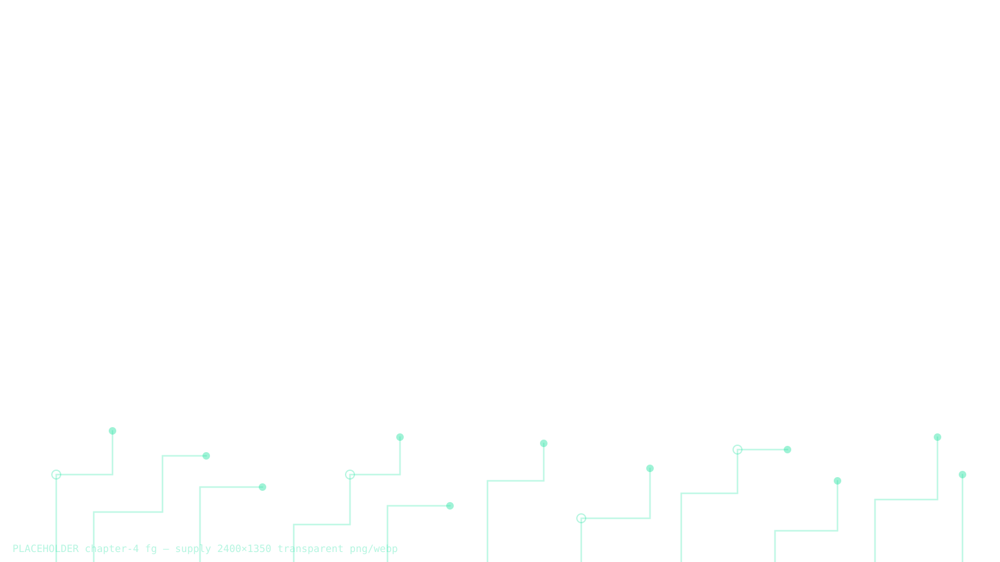
FORCED INDUCTION
Chapter 04 · The GenAI Shift
2023
The turbo spools: RAG chatbots with Agentic AI on AWS Bedrock, a self-healing scraper that speaks natural language through MCP, and an n8n + Terraform pipeline that cut infrastructure provisioning time by 80%.
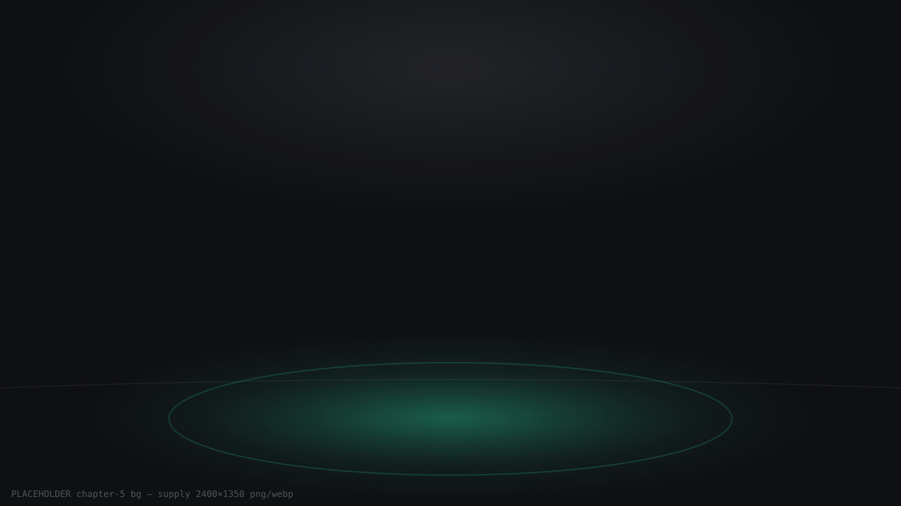
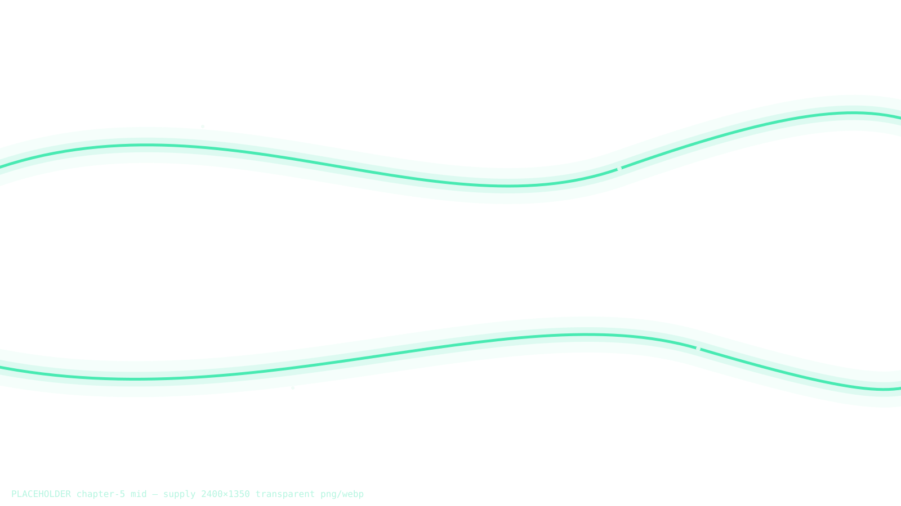
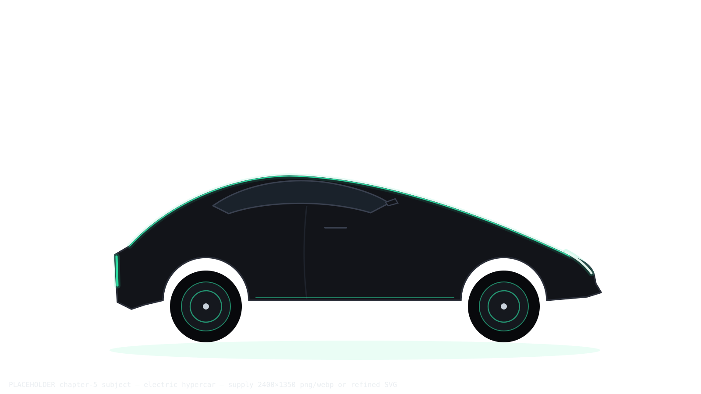
ELECTRIC HYPERCAR · NOW
FULL CHARGE
Chapter 05 · Lead Innovation
2026 NOW
Today: Technical Manager — Lead Innovation at Cozentus, architecting intelligent systems and the cloud beneath them, mentoring 20+ developers through 15+ workshops — with a CEO Bonus four years running.
The finale is being assembled in the workshop…